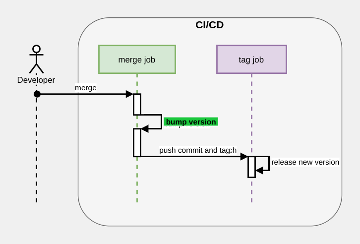

Automating semver releases with commitizen
SemVer is a great way to version an application. Languages like rust have fully embraced it.
A SemVer version looks like this: 1.2.0
Quite simple, right?
We can map that to MAJOR.MINOR.PATCH where
MAJOR ➡️ BREAKING CHANGES ⚠️
MINOR ➡️ New stuff 🎉
PATCH ➡️ Security 🔒 and bug fixes 🐛
That's the highlight.
Making a new release
Usually, when making a new semantic version (semver), you have to review your commits, check if there's any braking changes, then check if there are new features, otherwise, it's just a patch. This process can be tedious, but semver gives developers a lot of information about a release, like if they can update safely, new features, or they must update.
The release process can be fully automated, but it has a price.
The Price
- Write parseable commits
Automating release
By writing commits this way, we have to think, in that moment, what kind of change we are introducing. And that information get's encoded in the message.
Let's see a simple rule for parseable, easy to map messages:
Include MAJOR:, MINOR:, PATCH: at the beginning of each commit. If not present the commit will be skipped, and it won't be released.
Commits examples:
MAJOR: Change public interface for class User
MINOR: Add new type of user (employee)
PATCH: Fix full name not being displayed properly
And that's it! The next step is to use a tool to collect the commits, and generate the correct semver.
Commit tips
- Talk imperative and follow this rule:
If applied, this commit will <commit message>0 - Keep the subject short
Introducing commitizen
Commitizen is a tool to do exactly that.
I created it in order to automate that process. Based on existing tools from the JS ecosystem but which I found hard to use.
By default it parses the widely popular commit rules: conventional commits.
But you can easily extend commitizen to create the example given before.
Not only it will create the version, but it can also generate the changelog.
It's really easy to use, first create a .cz.toml file in your project's root.
[tool.commitizen]
version = "2.5.1"
version_files = ["setup.py", "Dockerfile", "src/__version__.py", "scripts/publish"]And that's it, by running a single command we get the version and the changelog.
cz bump --changelogThe veresion_files will also bump the version in the specified files.
CI/CD

In this diagram, you'd execute commitizen during the "merge job" (green in the diagram), where "bump version" is highlighted.
For example, if you are using Github Actions, you'd add this to your job:
on:
push:
branches:
- mainCommitizen then, will generate a new commit, with the updated version in the files and the changelog; and a new tag.
Both are pushed back.
For the new commit, we should not trigger again the CI.
The new tag, instead, should trigger another job, "tag job" (purple in the diagram), which will take care of the release, which can include:
- deploying to kubernetes
- publishing to pypi/npm/cargo
- deploying to a cloud service, like AWS
Done!
Recap
Standards
The Price
- Write parseable commits
Command
cz bump --changelogConclusion
Try commitizen and check the repo!
We aim for simplicity, trying to make this process as simple as possible, but the tool is quite flexible, explore it, and see if it fits for your use cases.
Hey, hello 👋
If you are interested in what I write, follow me on twitter